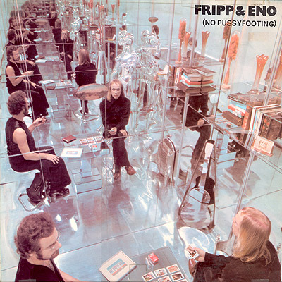
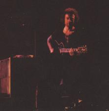
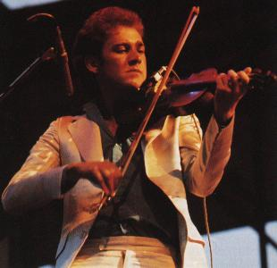
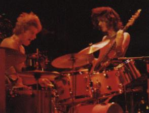
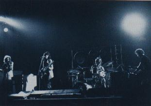
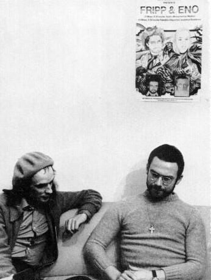

Artículo publicado en Melody Maker sobre la disolución de KC (octubre de 1974) [traducción]
Sobre el KC de 1973/74, editada en el libro de la caja "The great deceiver" (1992) [traducción]
Conferencia de prensa en Japón (1981)
Nota editada en el libro del cd "The bridge between" (1993) [traducción]
Reportaje en Argentina (sobre ambient, frippertronics y otros temas) (1994)
Top ten de Fripp (2003) [traducción]
Entrevista a Belew y Levin (2024)
Temas hitos [N de la R]
Artículo publicado en Melody Maker, 5 de octubre de 1974 (sobre la disolución de KC)
Robert Fripp: "Por qué maté al rey"
El "Rey Carmesí" finalmente abdicó la última semana. Pero el final vino con una declaración oficial que simplemente comenta que la banda "cesó de existir". Aparentemente no fue por choques traumáticos de personalidades dentro de la banda, no hubo un final con quiebre. Robert Fripp simplemente ha decidido que "era hora para King Crimson ir a un final". Esta decisión fue tomada en víspera de la edición del octavo album de Crimson, "Red", el cual prometía un nuevo capítulo en la evolución de la banda. Ian McDonald, el ejecutante de melotrón en la banda original, se había re-unido a una base permanente de Crimson. La banda había estado junta, de una u otra forma, desde 1969. Solo Fripp, sin embargo, quedaba del primer Crimson. En estos años la banda pasó por una constante permutación de músicos y, por cierto, hacía solo tres meses atrás que el violinista David Cross dejó Crimson después de una gira americana. La formación final era un trío: Fripp, el percusionista Bill Bruford, y el bajista John Wetton. Las razones que están detrás de la decisión de Fripp de disolver la banda son complejas y complicadas. Hay consideraciones musicales, por supuesto, pero Fripp también distingue razones filosóficas subyacentes para que Crimson deba ir a un final. Él argumenta estas razones con Robert Partridge de Melody Maker:
- ¿Por qué decidiste dar por concluido? ¿El experimento terminó?
-
Sí, y por tres razones. La primera es que refleja un cambio en el mundo. Segunda, mientras que alguna vez consideré que formar parte de una banda como Crimson era la mejor educación liberal que un joven podía recibir, ahora sé que no es así. Y tercera, las energías involucradas en el particular estilo de vida de la banda y en la música no son de gran valor para la forma en que yo vivo. Pero volvamos al primer punto, el cambio en el mundo. En el presente estamos pasando por una transición de un mundo viejo al nuevo. El viejo mundo está caracterizado por lo que un filósofo contemporáneo ha denominado "La civilización dinosaurio", grande y poco manejable, sin demasiada inteligencia, justo como un dinosaurio. Un ejemplo de esto podría ser, digamos America o cualquier enorme potencia mundial. Otro ejemplo podría ser una gran banda con un montón de administradores de ruta... todas estas unidades originalmente empezaron dando servicio a una necesidad, pero ahora tienes una situación donde ellos tienen que crear necesidades a fin de que ellos mismos puedan continuar existiendo. En otras palabras, se hicieron vampíricos. El punto interesante es que varios de esos grupos están aún en marcha cuando los músicos involucrados ya no están a cargo de la situación. Con King Crimson, aunque esa situación no se ha alcanzado, podría haberse desarrollado de esa forma en los próximos seis meses.- ¿Se estaba convirtiendo en un dinosaurio, entonces?
- No. Nunca se habría convertido en un dinosaurio. Pero habría sido una versión más pequeña de un dinosaurio. Una situación mecánica podría haberse desarrollado, lo que habría sido inmanejable. Y la banda no habría sido lo suficientemente pequeña, independiente, y lo suficientemente inteligente como para existir en el nuevo mundo. Y esos, por supuesto, son los atributos del nuevo mundo:
unidades pequeñas, móviles, independientes e inteligentes, ya sea...en lugar de una gran ciudad, habrá pequeñas comunidades autosuficientes, aldeas modernas. Y en vez de King Crimson habrá una unidad pequeña, independiente, móvil e inteligente. Esta es la diferencia sustancial entre el mundo antiguo y el nuevo. Pero la transición entre el antiguo y el nuevo ha comenzado. El viejo mundo está, de hecho, muerto, y lo que estamos viendo, si se quiere, es su agonía. Las unidades grandes tienen inmensos recursos y mucho poder, un tipo de poder no muy escrupuloso, que lo usarán para mantener su existencia. Ellas no son, creo, lo suficientemente inteligentes para darse cuenta de que de hecho están muertas, y en lugar de cooperar y participar de la venida del nuevo mundo, creo que será una pelea. La transición alcanzará su punto álgido entre los años 1990 a 1999. En ese período habrá colosales fricciones, y a menos que existan personas con cierta educación, veremos el completo colapso de la civilización tal como la conocemos y comenzará un período de devastación que podría durar, quizás, 300 años. Será comparable, tal vez, al colapso de la civilización minoica. Pero espero que el mundo esté listo para la transición, en cuyo caso habrá un período de 30 ó 40 años que hará que la Gran Depresión de los años 30 parezca una excursión de domingo. Al final de esa depresión el mundo habrá cambiado, y cualquiera que efectivamente haga la transición romperá interiormente con la adhesión a la concepción materialista de la vida.- ¿Cómo fundamentas tus dichos?
- Baso todo esto, en primer lugar, en un período de vida experimentando de primera mano la civilización materialista. Estoy hablando de America y del trabajo en una organización que, aunque no era un dinosaurio, era de gran tamaño. Vi en America pruebas suficientes de la ruptura del orden social y económico para saber que algo está fundamentalmente mal y no puede ser revertido. No hace falta ser muy brillante o perceptivo para darse cuenta de que francamente el sistema se está desmoronando. La vida es demasiado compleja y complicada para mantenerse en la forma actual. Pero también estuve en contacto con ciertas ideas... Y la coincidencia de ideas de diferentes fuentes me convencen de que estoy en lo cierto. Una vez más, no hace falta ser brillante para decir que dentro de diez años habrá considerables privaciones. Baso mis ideas en ideas de gente que respeto y tiene percepción directa de estos asuntos.
- ¿Podemos ir a la segunda razón para llevar a Crimson a un final? Habías hablado sobre una "educación liberal".
- Sí, a fin de prepararme para esa década crítica necesito adquirir ciertas aptitudes y habilidades. La educación de KC me ha conducido a este punto particular, pero no me educó en la forma en que necesito ser educado. Mi educación ahora necesita ser diferente. En lugar de KC ahora necesito, bien, esto me lleva a mi tercer punto, sobre las energías involucradas en el trabajo con la banda. Esto también abarca a aquel primer punto sobre el cambio del mundo. Para el trabajo en el que ahora deseo estar involucrado, las energías no son aquellas que obtengo de KC. Era una banda excelente, pero lo que estábamos haciendo no era realmente para mí. Y creo que tampoco para Bill o John. King Crimson era una banda democrática, cada uno tenía el poder de veto, y se acomodaban unos a otros. Pero llegamos al punto donde descubrimos que estábamos trabajando juntos simplemente porque no podríamos encontrar músicos de ese calibre fuera de la banda. En otras palabras, si yo busco un baterista de rock encontraría un número de personas para trabajar. Pero si busco un baterista, no solo un baterista de rock, estoy atascado. Está Bill y quizás Mike Giles, y tal vez otros dos en Inglaterra. ¿Y podría encontrar un mejor bajista que John? Pero mientras que originalmente habíamos empezado unidos (Bill porque quería trabajar conmigo y John porque quería trabajar con Bill), sentí que al final estábamos trabajando juntos porque no hay músicos de la misma calidad y habilidad afuera. Y musicalmente, tal vez, era demasiado compromiso. John es un roquero, pero Bill, en cambio, tiene un muy detallado y meticuloso enfoque. Cuando David se fue a pricipios de julio, sin embargo, consideramos trabajar como trío. Luego Ian McDonald se unió a la banda para una gira por USA, pero esto habría consistido en tres semanas de ensayo para cuatro semanas de trabajo, lo cual es muy desbalanceado. Y luego se sugirió una gira por Europa, y yo ya había decidido que la banda estaba llegando a su fin. La gira habría significado que la banda estuviera en ruta por otros seis meses; no estoy dispuesto a mantener secretos con la gente que trabajo, y la vida es demasiado valiosa para mí como para comprometer seis meses en una situación en la que no estoy involucrado con todo el corazón. De ahí de poner fin a la banda rápidamente. El asunto no se discutió como tal, aunque creo que tanto Bill como John estaban al tanto de mis sentimientos. Las energías involucradas no eran las correctas. Subir al escenario y tener que pelear con la agresión de cinco mil personas, tocarles completamente adonde ellos ponen la escucha... la banda se hace muy adepta a subir al escenario y azotar directo hasta el final, pero a expensas de crear algo de alta naturaleza, si lo desea. Para que te hagas una idea del trabajo que hicimos este año: en enero y febrero grabamos un album, luego fuimos de gira por Europa, inmediatamente después a America, de vuelta a Gran Bretaña para ensayar y directo de vuelta a USA para otra gira. Después de eso, tuve solo un día completo en el campo antes de comenzar la grabación de "Red". Con este tipo de vida hay un montón de cosas que me gustaría hacer pero no puedo. Están mis responsabilidades con la tierra, por ejemplo, que solo pueden ser cumplidas estando allí y trabajando [Fripp posee una casa de campo en Dorset]. Por lo tanto ahora puedes verme a mitad de un gran árbol sosteniendo una sierra y tijeras de podar. También estoy pasando más tiempo con el aprendizaje, tanto en un sentido amplio (por ejemplo soy prácticamente inepto en cualquier cosa más exitante que cambiar un enchufe de tres pines) y en el campo de la electrónica musical. Me gustaría volverme autosuficiente, para no sólo ser móvil sino también independiente. En otras palabras, quiero desarrollar habilidades prácticas, y además de esto, hay una actitud mental que involucra todas estas cosas.
- ¿Pero cuáles son tus planes musicales?
- Implican la creación de otra unidad, pequeña, independiente, móvil e inteligente, que es por ejemplo la situación de Fripp & Eno. Vamos a estar en ruta en noviembre. Fripp & Eno es, para mí, el ejemplo perfecto de todo lo que hablamos antes. No llegará a la masa de la gente en la forma que King Crimson lo hizo. Yo esperaba, como ves, que Crimson llegara a todos. En términos de la mayoría de las bandas, por supuesto, fue un éxito notable. Pero en términos de la cúpula más alta de bandas, como Yes y ELP, no lo logró. Mi enfoque, por lo tanto, ahora ha cambiado, y lo que Eno y yo tratamos de hacer es influenciar a un pequeño número de personas, que a su vez influencie a un gran número. Siempre supe que yo no sería una estrella del rock and roll, un ídolo de la guitarra al que millones de jóvenes intenten emular. No estoy dispuesto a contribuir con el síndrome de estrella. Eno y yo crearemos energías diferentes a las de King Crimson. Serán más sutiles e indirectas, pero eventualmente serán mucho más potentes, crearán más.

- ¿Por qué?- Porque sé que lo harán. ¿Qué puedo decir? Uno no siempre tiene la opción, pero a veces uno es afortunado de tener la chance de hacer ciertas cosas. El lado 1 del album de Fripp & Eno ["No pussyfooting"] es lo mejor que hice, comparable con el primer album de King Crimson. No es de interés para mucha gente, pero a lo largo de los años llegará a ser considerado un clásico, y en cinco años la gente se preguntará cómo pudieron perderse algo de aquella calidad.
Eno y yo saldremos primero por Inglaterra y Europa... tocaremos en Inglaterra en noviembre y diciembre. Será algo más chico y de naturaleza más personal, en salas pequeñas y solo nosotros dos. Seremos capaces de trabajar sin un alto grado de organización y preparación, será personal, se crearán las energías correctas y eso permitirá a nuestros estilos de vida ser civilizados, nos dará mucho tiempo para nosotros mismos y, por supuesto, nos dejará hacer otras cosas.
- ¿Por ejemplo?
- Otro de mis emprendimientos es un album con Robin Trower. Robin y yo nos llevamos bien en America y es uno de los pocos guitarristas con espíritu, y con una capacidad infalible para elegir lo correcto. Su campo es lo que mucha gente podría considerar estrecho, pero eso es totalmente irrelevante. Dentro de ese campo él es inmaculado, su sentido y control son excelentes. Y además de esto me ofrecieron un trabajo de producción. También me gustaría decir que estoy abierto a ofertas de trabajo de producción, esto es otra cosa acerca de ser móvil e independiente. La gente realmente puede llamarme y ofrecerme trabajo. Pero no tengo ofertas de nadie como guitarrista, y esto es otra cosa que me gustaría que sucediera. Deseo que la gente me pida tocar en sus discos o en sus conciertos .
- ¿Tocarás en vivo con Robin Trower?
- Me gustaría hacer conciertos con Robin. Pero él tiene su propio trío y eso sería presuntuoso. Pero si Robin me pidiera hacer una gira yo diría "sí, ya lo creo!". No habría forma de alejarme. Pero hay una cuarta cosa que quiero ver desarrollarse, daré clases de guitarra. Estuve pensando durante un tiempo en crear una técnica nueva de guitarra que lleve a un cambio en la personalidad del ejecutante a través de la disciplina. Yo era sordo y no tenía sentido del tiempo cuando me convertí en guitarrista. Y, mirando hacia atrás a través de los años, me pregunté cómo en la Tierra alguien poco musical, medio sordo y sin ritmo, se convirtiera en un músico profesional. Y tuve la respuesta: yo necesitaba la música, y la música necesitaba de mí. Si aceptas que necesitas la música, esto también implica responsabilidades. Porque por lo que recibo, tengo responsabilidades, y puedo cumplirlas como ejecutante. Mi enseñanza involucra la creación de una técnica que permita al ejecutante tener la facilidad de mover las manos para llevar a cabo una idea que proviene de un sentimiento desde su interior. En otras palabras, es una técnica que trabaja en el nivel de la cabeza, las manos y el corazón.
- ¿No es eso la esencia de la mayoría de las formas musicales?
- Bien, si estamos hablando de toda la música balanceada y armónica, sí. Si deseas tomar el músico de rock and roll, por ejemplo, él toca en gran medida desde las caderas. Esto no involucra altas energías. El rock and roll no es una música particularmente intelectual o esencialmente muy espiritual. Lo que me interesa hacer es proveerle al músico de rock and roll una técnica que le permita desarrollar un vocabulario que vaya más allá de todo eso. Pero para explicar esto un poco más debemos adentrarnos en los elementos de la música. Si tomaras el rock, el jazz y la música clásica, tienes, supongo, que el rock and roll es fundamentalmente una expresión física, esto es algo subido de tono, pero con el jazz tienes un enfoque mucho más flexible de las cosas, algo que tiende a ser muy emocional. Y la música clásica demanda una disciplina que la mayoría de los músicos de rock and roll encontraría aterrador. Cada uno de estos tipos de música existen en niveles diferentes. Hay un tipo de sentimiento asociado a cada uno de ellos, y hay vocabularios separados necesarios para expresar aquellos sentimientos. Lo que mi técnica de guitarra hará es permitir que los músicos se muevan más libremente de una forma de música a otra ya que, durante el aprendizaje de la técnica, su personalidad se pondrá bajo el estrés suficiente para que no sólo se desarrolle emocional y mentalmente, sino que también los sentimientos involucrados cambien su personalidad. En otras palabras, más que una técnica de guitarra es una forma de vida.
Nota del editor de esta página: leyendo este reportaje en la actualidad y viendo los hechos en retrospectiva, vemos que no eran solo palabras o conceptos pasajeros, y es clave para entender mucho de lo que Fripp hizo después. No solo disolvió KC, se alejó de la industria de la música por un tiempo y buscó su educación en la Academia para la educación contínua seguidora de Gurdjieff. También exploró mucho más musicalmente, sin aferrarse a su fama o creciente popularidad; cada cosa que hacía era como empezar de nuevo, y en cierta forma desconcertaba a quienes esperaban ansiosos nuevos capítulos de lo hecho anteriormente. Esto fue así tanto en torno a lo hecho con las siguientes formaciones de KC como en otros proyectos (sus discos solistas, The league of gentlemen, frippertronics). Buscó la diversidad de "unidades móviles e inteligentes": después de Fripp & Eno creó su propio equipo frippertrónico para girar con él por el mundo; después del KC de los ochenta, que siempre evitó que se convirtiera en "dinosaurio", creó la liga de Guitar Craft con la que también giró; cuando el KC de los noventa no podía "moverse", fomentó los ProjeKcts. Cumplió sus metas a mediano y largo plazo: producir a otros músicos, tocar como invitado en muchos discos de otros intérpretes y bandas, dedicar mucho tiempo a la enseñanza de una nueva técnica de guitarra. Buscó despegarse de los "dinosaurios grandes compañías discográficas" y evitar el "vampirismo", por eso terminó creando su propio sello y luchó legalmente contra antiguos representantes para adquirir los derechos de su música y poder "moverse" libremente. Incorporó en su discografía voces de Bennett con conceptos (instructor de la Academia donde buscó la educación que necesitaba), por ejemplo en su album solista "Exposure", en el album original de The league of gentlemen, en el album "Gone to Earth" compartido con Sylvian. Un tema frippertrónico del album "Live!" de 1986 con la liga de Guitar Craft se llama New world, y en el libro del cd "The bridge between" de 1993 escribió sobre el paso del mundo viejo al nuevo (ver nota más abajo). Un album solista de soundscapes grabado en vivo en 1994 se llama "1999". Se pueden o no compartir las ideas de Fripp, pero no puede negarse una total coherencia entre sus pensamientos y sus acciones a través del tiempo.
Sobre el KC de 1973/74 y su disolución
(editada en el libro de la caja The great deceiver, 1992)
El grupo
Hay actualmente 120 discos piratas de KC disponibles en Japón de toda la historia del grupo. El grueso de los catálogos piratas se centra en 1973 y 1974. Así que estoy convencido de una amplia y contínua demanda por KC en vivo de ese período. Mi colección personal de grabaciones de KC en vivo es extensa, y generalmente mucho mejor en calidad que lo disponible en el mercado negro, cintas de coleccionistas, tiendas de Japón o maletas de cuero de bazares en Amsterdam. La mayor parte del contrabando es bastante tosco pero presenta una perspectiva interesante de cómo era estar en el auditorio, esto es, la audiencia como "hacedor" con el grupo como telón de fondo. Algunas grabaciones piratas son tranquilamente bulliciosas, con discusiones y razonamientos entre duros seguidores de KC e inocentes nueva-audiencia, sobre unos viajes Crim en "territorio no carteado". Quienes vieron los espectáculos conocen el poder asustador de este equipo desigual, pero una joven generación solo tiene los albums en estudio y los piratas. Una mounstruosa criatura en vivo, que falló al transportar su poder a una grabación hasta el album de estudio Red en 1974, que solo insinuó su intensidad. El equipo en vivo, aunque potente, era defectuoso de varias formas.

La formación del grupo incluía a Jamie Muir, un maravilloso, reflexivo y sabio joven, exéntrico y erudito, que alegremente golpeaba sobre cápsulas de sangre mientras liberaba cadenas enroscadas alrededor de su cabeza y que momentos antes habían sido láminas golpeadas de metal; entonces caía en un efusivo y sangriento estilo sobre sus tambores para propulsar al grupo y su co-percusionista Bill Bruford a través de la siguiente pieza de alboroto orquestado [*]. O amenazaba grandes vitrinas en uno y otro lado sobre el escenario con demolición por agitaciones. Todo esto vestido con pieles de animales. Él también ocupó 40-60 % de recursos del grupo en espacio y tiempo. Jamie era muy inteligente y un humano bien balanceado, que comenzaba una estadía con el grupo para largo. Confrontado con el sinsentido de la vida en el camino, optó por la vida. Enfermó y faltó a dos recitales en el Marquee, febrero 10 y 11 de 1973, cuando Bill asumió el rol de baterista-percusionista por primera vez. Este fue en realidad el debut del Crimson de 4 integrantes. Aunque completó la grabación de Larks' tongues in aspic a comienzos del 73, Jamie nunca regresó al grupo. Recibí una postal suya no mucho después, con un collage-Muir montado en el frente; "Todo parte del rico tapiz de la vida; con afecto, Jamie", escrito al dorso. Él estaba partiendo a un monasterio en Escocia, donde pasó los años siguientes.
El equipo de 4 que quedó nunca se estableció en los 16 meses de trabajo en vivo que siguieron, y después de que David Cross dejara. El violín no es un instrumento de heavy metal, ni de rock duro. Como el grupo desarrolló una postura más muscular, el lugar de David en la banda perdió contexto y se transformó crecientemente en pianista y melotronista.
El objetivo de presentar estos trabajos en vivo es reflejar el espíritu del grupo en un momento de su aparición. Desarreglado y desarreglando, se introdujo en lugares de luz y de oscuridad; salvajemente antipático, desbalanceado y con tiempo pródigo, vigoroso, explorando y saltando y a menudo con la marca perdida, en momentos dolorosamente conmovedor, moviéndose en un territorio que fue perturbando y perturbado, y nunca arribado adonde estaba yendo: donde estaba yendo era cómo apuntó allí, a veces sintonizando a lo largo de lo andado. Esta música es tomada de la época en que no considerábamos más a Inglaterra como base principal de nuestro trabajo, tampoco a Europa; era más bienvenida en América.

El volumen de los melotrones, piano eléctrico, guitarra y violín era controlado principalmente por pedales. Así, si un pie resbalaba la "orquesta" tambaleaba. Wetton generalmente alteraba el volumen del bajo moviendo la perilla de su Fender, una operación no exacta en momentos de ecuanimidad, y el enorme ruido de su pedal wah wah era inmenso. Los personajes sobre el escenario estaban tocando un gran recital en vivo, y fueron para eso. Si uno de ellos no podía escuchar lo que estaba aconteciendo, podía tocar más bajo; o no. Ellos podían descuidar el no poder escuchar a algún otro, hasta podrían no quererlo. Así, ajustar adecuadamente el nivel sobre el escenario en el momento era lo que debían hacer y, fallando esto, lo que hacían de cualquier forma. Entre 1973/74 KC tenía un crecientemente recio bajista de asombrosa fuerza e imaginación, quizás el mejor bajista joven del momento en Inglaterra. Siempre que fue a La Taberna Clandestina se le ofrecía un trabajo con otro grupo inglés famoso. El baterista tenía el temperamento de un músico clásico que quería ser un jazzista y trabajar en grupos de rock. Él encontró en KC un grupo que le dio la libertad de explayarse, experimentar, crecer, acertar en cosas sólidas y componer. Así lo hizo. No estoy seguro que Bruford/Wetton era una buena sección rítmica, pero ellos eran asombrosos, activos, exitantes, móviles, ágiles, inventivos y terribles al tocar.
El violinista fue ubicado en una situación crecientemente imposible. Una distancia musical y personal comenzó a abrirse entre él y el resto del grupo. El balance entre David y Jamie, construído en el quinteto original, se perdió. Él aportaba delicadeza y leña. Pero en la línea del frente no podía competir con el poder de la sección rítmica o su volumen, y la guitarra fue más fuerte que el violín. (...) No era difícil escuchar el bajo, y casi imposible no hacerlo. Al punto de que puse una pantalla de sonido entre la sección rítmica y yo. Ellos lideraban el grupo desde el centro. Yo lideraba el grupo desde un costado. Ellos ganaron.Así, KC 1973/74 no fue un grupo balanceado, o quizás fue balanceado en el desarreglo. Esto fue a veces espantoso, y no un lugar confortable para estar. Finalmente era inherentemente inestable, apuntando a diferentes partes y yendo en diferentes direcciones. Después de 16 meses como cuarteto se convirtió en trío por 3 meses. Acto seguido KC "cesó de existir".
[*]: se refiere al tema The talking drum.
Previo a las preguntas se entrega un volante que dice:
"King Crimson
Nunca fue mi intención resurgir a King Crimson, esa ecléctica banda con
visión hacia el futuro de naturaleza inestable. Entonces, ¿por qué ahora
después de tantos años de negativas? Hay varias respuestas cortas:
1. El periodismo tergiversó mis palabras.
2. Nadie podría creer que la banda iba a cruzarse de brazos durante siete años.
3. Estaba equivocado.
4. Fripp es un imbécil, un oportunista, un charlatán.
Hay tres respuestas largas:
1. King Crimson tiene vida propia, a
pesar de lo que sus miembros digan o hagan. Cualquier forma pensante que atraiga
atención se convierte parcialmente en un ícono y desde que el grupo
"dejó de existir" en 1974 el interés ha continuado. En los primeros
ensayos de abril [de 1981], percibí este potencial cerniéndose detrás del
grupo, y energía disponible si nos disponíamos a tocar. Intentar formar King
Crimson o apenas adoptar el nombre había sido imposible: King Crimson es una
manera de hacer las cosas.
2. La música tiene vida propia, y llama a caracteres particulares para hacerse
oir.
3. Este es mi trabajo, y es una progresión lineal desde la tercera división: Frippertronics,
y la segunda división: The League of Gentlemen. King Crimson es la
primera división y marca la transición entre el Camino hacia 1981 y el Declive
hacia 1984.
Y sus objetivos son:
• Trabajar en el mecanismo empresarial pero no gobernado por el mismo. Este trabajo debería darme dinero, educación, diversión y comprometerme con otros.
• Presentar y probar ideas.
• Una disciplina personal.
El movimiento musical del cual King
Crimson fue una fuerza creadora salió trágicamente de su ruta y Crimson fue el
único grupo con la inteligencia de retirarse cuando su utilidad había
expirado. En un mundo muy diferente al de hace siete años hay trabajo muy útil
para hacer que requiere un instrumento poderoso. Así es que King Crimson ha
regresado al servicio activo."
Extractos de preguntas y respuestas:
- Usted siempe ha estado en movimientos vanguardistas, ha trabajado con Eno,
con Bowie, con muchos otros. ¿Aún le gusta lo que ha hecho en el pasado? Si es
así, ¿por qué en el concierto del teatro Shibuya Kokaido sólo tocaron Red
y Lark's Tongues in Aspic II del viejo material de Crimson? ¿Fue
para dejar contenta a la gente, porque aún le gustan esas canciones o porque
simplemente se le dio la gana?
- Para empezar, yo no me veo en eso de estar en la vanguardia. Estar al frente
de algo es relativo. Tiene mucho que ver con la moda. Lo que vale de un músico
o de una música nueva es la calidad, no el estilo. Pero si uno quiere ganar
dinero debe dar la impresión de que está a la moda. Por eso, a pesar de que yo
no me veo en eso de estar en la vanguardia ni en determinado estilo, me complace
ser una excepción porque me ayuda a ganarme la vida.
La música que he hecho en el pasado raramente la escucho.
A veces me fijo si algo de eso todavía está vigente y hay cosas que sí.
Con respecto al viejo material, King Crimson nunca se ha enredado con material viejo. Aún cuando el público lo pida, siempre me responsabilizo de tocar aquello que determine mi buen saber. Creo que si tocáramos el viejo material ganaríamos muchísima fama y dinero, y también seríamos más estúpidos de lo que somos ahora.
Las canciones viejas que tocamos (Red y Lark's Tongues) las tocamos porque realmente tenía muchísimas ganas de hacerlo. Son dos inteligentes clásicos de heavy metal. Ambos combinan calidad visceral con inteligencia. Crimson nunca tocó Red antes de esta formación y ése fue uno de los motivos que me dieron ganas de hacerlo. Lark's Tongues suena mejor ahora que nunca.
Encuentro muy difícil el ser presentado como una parte de una banda popular, porque genera expectativas en el público. Esas expectativas son como una presión: no satisfacés lo que el público piensa que va a ver porque tienen la idea incorrecta de lo que vos deberías estar haciendo. Entonces ellos no ven lo que vos estás haciendo y como no estás haciendo lo que ellos quieren perdés de todos modos. Es por este problema de la expectativa el que sea muy difícil tomar contacto con el público en grandes estadios. Por eso estamos haciendo conciertos en salas de no más de 1500 asientos. Ya 3000 es demasiado. Sería muy complicado explicar mi forma de trabajo, sobre todo por los problemas de traducción, pero sintéticamente se trata de trabajar con los grandes esquemas de los EE.UU. e Inglaterra y, estando adentro, cambiarlos desde el interior. Esto no intenta ser ningún tipo de revolución, y se consigue con considerable dificultad. En Japón no es posible, porque no tenemos los contactos. En materia de lo que yo espero de una gira considero a esta gira japonesa como un fracaso. Para saber cómo es hacer giras por Japón, hay que hacer giras por Japón. Vinimos sin pretensiones de éxito, simplemente para saber cómo es el asunto aquí. Ahora tenemos una pequeña conexión que nos servirá para el futuro. Trabajar en América al 65% de lo que nos gustaría nos llevó siete años".
-Usted trabajó con muchos músicos. En los casos en los que usted no participó en la faz compositiva, ¿con cuál de ellos se siente más relacionado?
-Con Keith Tippett y Jamie Muir. Estoy trabajando con ellos ahora. He sido muy afortunado de trabajar con excelentes músicos. Como comentario, los mejores músicos son los que no tienen formación musical, es decir los autodidactas, los que no leen. Por ejemplo, David Bowie es un actor, Brian Eno es un artista visual, Deborah Harry [cantante de la banda Blondie] es una actriz. Adrian Belew toma sonidos del zoológico. Va con su hijo a escuchar a los animales. La gente cree que bromeo cuando cuento esto, pero es completamente cierto.
Un periodista japonés le pregunta sobre el asunto de las improvisaciones.
-Básicamente hay dos formas de encontrar libertad en la música. Una es tener una estructura fija en la cual uno busca puntos de libertad dentro de ella, y la otra es tener puntos fijos en una estructura libre. Con la música clásica europea uno tiende a pensar que Mozart es muy 'rígido', muy aferrado a lo que está escrito. Ese es un error que se creó con los años. Cuando Mozart entregaba una partitura a un violinista, por ejemplo, y éste tocaba textualmente lo escrito, Mozart le decía "Eh, torpe, ¿qué estás haciendo?¿por qué no lo estás desarrollando?". Por nuestro temperamento y nuestra forma de trabajar, King Crimson se inclina más hacia lo escrito o compuesto. Pero es sólo una tendencia. En detalle, la música cambia permanentemente. Cuando se torna muy rígida la sacudimos de alguna forma. Cuando se degenera bastante, volvemos a armarla un poco. En 1974 King Crimson subía a un escenario y se dejaba un espacio en el cual un músico empezaba a tocar y los demás debían seguirlo. En el álbum "USA", Bill comienza a tocar y yo grito "F!" y así comienza todo. Con esta banda combinamos cada noche en tocar una serie de acordes sin saber adónde nos llevarán. A mí, personalmente, me gusta improvisar. Casi todo lo que he hecho para otra gente ha sido improvisado. Por ejemplo, "Scary Monsters" y "Heroes". Todo lo que toco en esos álbumes fue improvisado. En "Heroes" prácticamente toco a primera leída. En "Scary Monsters", primero lo escuché una vez, luego me dieron una hoja con los acordes D y B, que son las iniciales de Bowie. Para que lo mío no fuese demasiado fijo, donde decía D toqué B y donde decía B toqué D. Lo que es un ejemplo de ser suelto con sentido del humor en una estructura fija ([sonríe festejándo su respuesta]). La nueva música no es un estilo sino una cualidad.
-En sus últimos discos hace mención a Paul Bowles, a H.G. Wells y a William Blake. ¿Por qué su interés en esas personas?
-Un tema [de The league of gentleman] fue titulado H.G.Wells porque cuando estábamos componiéndolo nuestro manager entró a la sala con un sombrero que tenía escrito en su frente "H.G.Wells" ([risas]). Hubo una figura literaria inglesa en la década del '20 mucho más importante, llamada Orage. Él, que era un crítico famoso, consideraba que Wells tenía un carbunco de talento. William Blake era un genio con carbunco. El nivel de percepción de Blake era completamente diferente al de Wells. Wells tenía... talento. Blake tenía visión.
Sobre Paul Bowles, una amiga mía llamada Joanna Walton, quien me ayudó en el álbum "Exposure", visitó a Bowles en Marruecos y a través de esta conexión descubrí su obra que tanto me ayudó a embellecer nuestra música. Bowles trabajó en los años '40 en el área musical que Steve Reich y Philip Glass [*] desarrollaron en los '70, lo que vuelve un poco a la respuesta de que "estar en el avant-garde" es siempre relativo. En los años '80 King Crimson es acusado de tomar ideas de Reich y Glass, pero nadie critica a Reich ni a Glass por usar las ideas de Bowles de 30 años antes.
[*] Steve Reich y Philip Glass son, junto a Terry Riley, los precursores de la música repetitiva y minimalista (los 3 son estadounidenses y nacieron en la década del '30).
Sobre la música, los músicos y ...
(editada en el libro del CD The bridge between, 1993).
El acto de la música continúa para mí en un acto a través del cual la inexpresable benevolencia del impulso creativo puede entrar en nuestras vidas, y las encamina y las forma en una vía y modo tan radicales y abrumadores que una simple nota puede cambiar nuestro mundo. Y si es nuestro mundo, es el mundo de todos nosotros. Esta es siempre una posibilidad, a pesar de las limitaciones y restricciones puestas sobre el evento.
El músico no profesional puede estar inadvertido del cinismo, la voracidad y la violación sobre los que la industria de la música se ha basado en los años recientes. Nuestro propio cinismo, en respuesta, es también un alto precio a pagar. A pesar de todos los intentos de reprimir el poder de la música, el acto de la música es siempre notable.
Quizás haya quienes creen que un músico debe tocar y luego estar callado, y tengo simpatía con ese sentimiento, pero pido me disculpen por tomar esta oportunidad para referirme a temas de mi contínua preocupación.
Tal vez tenemos noticias de que el mundo que nos es familiar está colapsando. La anulación de la responsabilidad, de quienes están en posiciones de poder para quienes dependen de ellos, pareciera ser una constante en nuestra historia reciente: la violación moral, política, personal y profesional es endémica en la cultura contemporánea. El nuevo mundo está luchando por nacer, mientras carga pasivamente las repercusiones del pasado y toma una activa oposición frente a lo viejo. El futuro está en un lugar, y esperando, pero aún debemos descubrirlo. Nuestra actual posición es en el puente de en medio. Esta posición es azaroza, porque estamos construyendo el puente mientras lo cruzamos. Una persona razonable desesperaría, pero la esperanza no es razonable y la redención es un evento actual. Artistas, músicos y poetas tratan a diario con lo irrazonable. Este es el aliento de vida de nuestro trabajo y el pegamento invisible que mantiene juntos a los intérpretes, la audiencia y nuestra canción.
Redención y reparo, para quienes se comprometen a servir al impulso creativo, es un aspecto del arte aplicado y totalmente práctico. La Gracia (realmente disponible, simplemente experimentada, más allá del entendimiento) no requiere la razón para entrar en nuestras vidas, pero necesita un vehículo.

Sobre el ambient y los soundscapes que estaba presentando Fripp en vivo en Buenos Aires
- Me gustaría saber cómo trabajás en este tipo de conciertos. Escuché que es como una versión actualizada de los frippertronics.
- Sí, así es.
- ¿Podrías explicar un poco qué es lo que hacés?
- La parte sonora de esto tiene que ver con repetición y capas de sonido. Esa es la historia con los frippertronics. En la formación moderna, la tecnología reemplaza los grabadores de cinta. Puede cambiar un poco, pero básicamente tiene que ver con la repetición y las capas; pero a causa de la manera en que esto funciona, nunca podés repetir exactamente lo que sucedió antes, o sea que siempre va a ser diferente. Una cosa que he notado con esto es que la música siempre es fiel al momento; si la atención del músico no está concentrada la música no va a tener foco. Si la audiencia está inquieta, entonces la música va a tener esa misma característica. Pero trabajar individualmente, sin otros músicos, provee diferentes oportunidades y diferentes desafíos; no hay nadie a quien yo pueda mirar, de manera que la responsabilidad es solo mía.
- Es importante lo que decís acerca de las capas, ya que es usual en estos días que los músicos toquen sobre bases sampleadas o pregrabadas. Esto es totalmente diferente.
- Lo que escuchás es lo que es. No hay nada pregrabado. Está todo tocado en tiempo real. No hay samplings, no hay cosas pregrabadas.
- Con el equipamiento que tenés vos hacés entrar en él cierto tipo de sonidos y luego a partir de eso obtenés un output. ¿Cómo te manejás con eso, cómo seleccionás el material?
- Eso es más de una pregunta. En términos de responder a lo que vos introducís dentro del equipamiento, "¿cómo te manejás con eso?" Con los pies. Pensando con los pies ([risas; Fripp se refiere a su pedalera]). Eso es parte del desafío que plantea esta situación. En términos de lo que entra, del imput, bueno, el músico profesional siempre tiene una responsabilidad hacia la audiencia. De manera que yo desearía subir al escenario sin tener absolutamente la menor idea, y podría tocar algo soberbio. Pero puedo hacer una lista de ciertas áreas sobre las que, si es que no surgen las ideas, puedo tomar alguna de ellas, de cualquier manera. Pero lo que usualmente sucede es que, si yo soy capaz de encontrar un motivo entre la colección de sonidos que está entrando, entonces el paso siguiente se vuelve obvio. Encontrás una nota que parece ser buena y tenés que confiar en ella, entonces tocar eso. Luego puede aparecer una segunda, y una tercera, y después una cuarta. Y ahí tenés un motivo. Y entonces quizás, si estoy escuchando, otro motivo se vuelve obvio, y si no, entonces tengo mi experiencia como músico para responder a ese motivo. Así que parte de esto aparece en el momento, y parte de esto es un músico experimentado, pensando sobre sus pies, dentro del contexto que está emergiendo. Y a veces el equipamiento falla, y entonces lo que tenés que hacer es manejarte con eso. Como una radio que se filtra a través del equipo; yo estaba tratando de hacer algo, y de repente aparece eso. Y entonces tengo que continuar, aunque esto no era lo que yo había supuesto que iba a suceder; eso es una oportunidad de practicar lo que te había dicho antes.
... - Me estaba preguntando si estás interesado en la música ambient, ya que mencionaste tu trabajo con The Orb y también con Eno, que es alguien...

- Oh, él es el padre fundador del ambient. A principios de 1975 fui a visitar a Brian, que tenía un grabador de cinta y en el fondo estaba grabándose a sí misma una pieza que fue lo que se tornó "Discreet music". Esto fue originalmente grabado para que Robert tuviera algo sobre lo que solear encima en los conciertos de Fripp & Eno. Nosotros hicimos una pequeña gira en mayo de 1975 por España y Francia. En Francia nos silbaron y tuvimos que irnos del escenario. Al principio de la gira hubo una considerable consternación en el primer teatro, en Madrid. Cinco minutos antes de irnos del escenario nos dijimos "¿Qué deberíamos hacer?". Entonces tocamos durante unos diez minutos más y nos fuimos, dejando que la música siguiera. O sea que al final del concierto, que no recuerdo cuánto duró, dejamos que la música siguiera sonando y fuimos a sentarnos en la parte de atrás del teatro. La música siguió sonando durante unos 20 minutos más y luego paró. Es decir que tenías gente sentada ahí durante 20 minutos frente a un escenario vacío, sin saber qué hacer, preguntándose cuándo se detendría la música, diciéndose "¿Qué está pasando? ¿deberíamos irnos ahora o no?". Fripp y Eno no podían decirles, nosotros no teníamos idea de qué es lo que ellos debían hacer. En esta performance, después nos contaron, había un tipo ahí diciéndole a su amigo "¡Esto es genial!", mientras que al lado había otro diciendo "¡Esto es una mierda!". Yo escuché a uno que vino a increparme "¡Hey! ¿Por qué están haciendo esto?!". El segundo concierto fue en Barcelona e hicimos lo mismo. Terminamos el concierto , nos fuimos y dejamos que la música siguiera sonando. Estábamos en bambalinas, y puerta de por medio estaba el público. Entonces golpean a la puerta, y aparece un joven americano que le pregunta a Eno: "¿Ha terminado?" . Y Eno se asoma a la puerta y le dice: "Ha terminado para nosotros, pero no para ustedes", y vuelve a cerrar la puerta ([risas]). Eso era algo salvaje. Recientemente han reeditado en cd los trabajos de Fripp & Eno, y salieron muchas críticas diciendo que 20 años atrás esto era algo revolucionario, pero que ahora ya no lo era. Pero yo estaba en España cuando esto sucedía, yo estaba en Francia cuando nos hecharon del escenario. Yo estaba en Francia cuando hicimos un concierto y vinieron 20 personas a ver a Fripp & Eno. Yo estaba allí una noche de domingo en el London Palladium, tocando con Fripp & Eno, cuando toqué un FA en la tercera cuerda ([canta una nota vibrando que suena como el maullido de un gato]), y Eddie Jobson se rió desde la audiencia. Yo estaba allí cuando esto sucedía. En ese momento era algo extrañísimo. No para nosotros, pero...- Claro, ahora, como vos dijiste, es un tipo de música aceptada.
- De cualquier manera, aquí estamos.
- Pero finalmente no me contestaste si te interesaba o no la música ambient.
- Creo que ya te dí la respuesta (risas). Hay un lugar en Nueva York donde suelo ir a las 8 de la mañana a tomar el café con leche y reflexionar sobre el día. Y una mañana estaban pasando "Discreet music", y este es exactamente el tipo de situación para la que Eno concibió esta música. Vos podés escucharla o no. Pero esta mañana fuimos a un lugar que queda en Las Heras y Pueyrredón ([es una esquina clásica de Buenos Aires]); lo he visitado en 3 ocasiones, pero esta mañana por primera vez tenían rock’n roll. Terrible. No podía ignorarlo. Si pasan Percy Faith, eso yo puedo ignorarlo, pero no la música de rock. Terrible. Mucho mejor que eso, es la música ambient de Eno.

Fripp y Eno durante su gira de 1975.

Arriba: Fripp & Eno en vivo en París, 28/5/75 - Abajo: afiche del recital en Tunbridge Wells, UK, 7/6/75

Extractos sobre otros temas
- Acerca de la diversidad de proyectos en que estás envuelto simultáneamente, ¿tiene que ver con que te aburrís muy rápidamente de un mismo tipo de música? ¿Cuáles son las motivaciones?
- ¿Cómo te manejás para tener 4 extremidades y respirar al mismo tiempo?
- Bueno, es algo natural.
- [se señala un brazo] King Crimson; [se señala el otro brazo] String Quintet; [se señala una pierna] Guitar Craft; [se señala la otra pierna] Frippertronics. [Se para e inspira profundamente] ¡Música! ¿Por qué pararte en un solo pie cuando podés caminar?
- Mencionaste los cursos de Guitar Craft, donde enseñás música...
- Yo no enseño música. Dentro de Guitar Craft mi título es Instructor en Guitar Craft y mi especialidad es interpretación de la guitarra con púa. Pero no me veo a mí mismo como un maestro, y ciertamente no como un maestro de música.
- ¿Pero explicás cosas acerca de la música y el instrumento, no es cierto?
- Yo tengo la sensación de que la mayoría de la gente tiene una capacidad innata para desarrollar una relación con la música. Y si ellos vienen al Guitar Craft, generalmente hay una apertura hacia la música. Y si el estudiante se aplica a aprender la guitarra, eso implica refinar el instrumento humano. La música está siempre disponible, y si estás en una situación que te permite quizás estar más afinado con tu instrumento, la música te habla directamente. Yo no enseño música. Lo principal es hacer una presentación directa. La música es una fuerza muy real. Es como alguien que está allí, y quizás nosotros no sabemos cómo hablarle. Entonces tal vez alguna otra persona pueda presentárnosla. Y eso es realmente lo que tiene que hacer un buen maestro, agarrarte de la mano y decirte: 'quiero presentarte a mi amigo Mr. Music'. Yo tengo la suficiente experiencia como para presentarle a un estudiante la guitarra, y si esa presentación es efectiva, entonces quizás la guitarra le presente al guitarrista a Mr. Music.
- Quería preguntarte acerca de la afinación que usás. Entiendo que usás una afinación especial.
- Esta es la afinación del Guitar Craft: C-G-D-E-G-A (RE-SOL-DO-MI-SOL-LA), yendo desde la sexta a la primera cuerda.
- ¿Vos desarrollaste esta afinación?
- ¡No! Ella vino a mí. En Nueva York, entre las calles Bleecker y Thompson, en setiembre de 1982 a las 10:30 de la mañana; yo iba al lavadero, y ahí estaba la afinación. Sabemos que cuando las ideas aparecen, aparecen dentro de un contexto de trabajo. Pero no llegan por un llamado, se presentan a sí mismas. Las ideas se presentan en el contexto de la experiencia, pero Robert no pensó esa afinación, para nada. Se presentó a sí misma.
- ¿Qué podrías decir que te permite esta afinación que no te resulte disponible con la afinación estandar?
- Va más abajo en los graves y más lejos en los agudos. La afinación es más exacta y tiene una inteligencia de la que la afinación normal carece. Es mucho mejor. Pero vos no vas a decir esto a menos que trabajes sobre ella durante algunos años. Te podés expresar mucho mejor, pero es difícil abandonar la vieja afinación.
- ¿Vos usás ambas?
- No, solo esta.
- ¿En todos tus trabajos?
- Sí.
- Una cosa que noté la otra vez que tocaste en Buenos Aires con el String Quintet fue que tocaron una pieza clásica, de un tipo de música que uno normalmente no asocia con vos, ni en el sonido ni en el estilo. ¿De dónde vino eso?
- Probablemente te referís a una pieza [de Bach] llamada Passacaglia. Esto es debido a la influencia de Bert Lams [miembro del California Guitar Trio] dentro del quinteto. Bert es un gran conocedor de la música de Bach, alguien que está cercano a su espíritu. Cuando Bert toca Bach, no es un ejercicio; Bert está expresando a Bach, y Bach está vivo en esa música. Así que probablemente esta pregunta estaría mejor dirigida a Bert que a mí mismo. Si me preguntás si yo tengo respeto por Bach: cuando está vivo, sí. Pero a menudo no está vivo. Con Bert, es música.
- ¿Qué opinás de la gente que convierte la música en un montón de notas, en exhibiciones de destreza o virtuosismo? ¿Es algo que te interesa?
- La cuestión para mí es si la música me conmueve. Esto me lleva a la cuestión de qué es lo que me conmueve. Bueno, puede conmoverme en un montón de formas. Pero generalmente tiene que ver con el hecho de si la música es real para la persona que la está tocando. Si es un músico muy bueno que puede tocar bien una música muy difícil, bueno, es un músico profesional, yo voy a reconocer la habilidad. Pero lo que generalemente me conmueve en una persona joven es la expresión directa: el primer Elvis Presley, maravilloso; Scotty Moore, el guitarrista de Elvis, hermoso; Jerry Lee Lewis, Little Richard, ¡WOW! ¡El poder de esa música! Los cuartetos de cuerdas de Bartok, ¡Aaaaaahh! Hendrix en 1967, los Beatles de "Sgt. Peppers...", expresiones fenomenales. Esa música me conmueve.
- ¿Podrías mencionar algunos de los nombres que te parecen más destacados dentro del ámbito de la música clásica y el jazz?
- Prefiero no hacer comentarios sobre el trabajo de otros músicos. Los gigantes en ambos campos son obvios: en el siglo 20, Bartok, Parker, Ellington, Davis. Estos son los grandes gigantes. ¡James Brown! Creo que fue Stravinsky a quien le pidieron que nombrara a los tres más grandes músicos, y él dijo "Las tres B": Bach, Beethoven y Brahms. No sé si es cierto, pero es una gran historia. Después de Bach y Beethoven habría que ubicar a Bartok. Bartok es el compositor del siglo 20; él comprendía la forma mejor que cualquier otro. Era un ejecutante virtuoso y un hombre con integridad.
- Quería preguntarte algo acerca del nuevo King Crimson.
- Es grandioso, terroríficamente bueno.
- Entiendo que trabajan como dos tríos...
- Sí, doble trío.
- ¿Pero los dos tríos tocan simultáneamente?
- A veces, aún son los primeros días.
- ¿Está relacionado con el último período de King Crimson?
- No, está relacionado con la música.
- Entiendo que decidiste tocar en teatros pequeños, y aún dentro de ellos poner a la venta un número de localidades que es inferior a la capacidad del teatro.
- Las desventajas de los lugares grandes me parecen obvias: el sonido es muy malo, la visión es muy mala. ¿Entonces por qué vas a querer ir a un lugar donde vas a estar incómodo?
- Estoy de acuerdo, pero no es algo usual en este negocio.
- Sí, pero no muchos promotores tienen la visión del señor Núñez [Hernán Núñez es miembro del trío Les gauchos allemands y artífice principal de las visitas de Fripp a la Argentina].
- Pienso que es una actitud valiente de tu parte, porque con King Crimson podrían tocar inclusive en estadios.
- Yo veo eso como un insulto al público. Y también es una falta de respeto hacia la música. La música debe ser respetada, tanto como el público.
- ¿Tenés una medida ideal para el tipo de música que tocás?
- Depende del tipo de música que toque. Por ejemplo, el String Quintet tiene que ser en un teatro de cámara, esto es obvio. Generalmente con algo como Frippertronics, la medida sería entre 250 y 500 personas. Pero lo ideal sería 250. Con el Quintet probablemente 500. En el caso del grupo, con King Crimson, probablemente entre 1500 y 2000 personas, porque la música es más fuerte. En algunos lugares donde tocamos al aire libre, como en USA, el límite sería unas 5000 personas. Pero esos serían unos pocos conciertos especiales, al aire libre, donde la música puede expandirse. Es distinto a un estadio de deportes, donde la música tiene que ser agresiva.
- ¿Por qué elegiste Argentina para comenzar la gira de King Crimson?
- A causa de la gente de Argentina, yo creo en su generoso interés. ¿Eso te parece suficiente?
- Por supuesto, es justo. Hemos estado esperando escuchar a King Crimson durante más de veinte años.
- A nosotros nunca nos habían dicho eso. Hasta que vino Núñez y me dijo que tendría que ir a la Argentina y ver cómo son las cosas por allí. Y antes que venga King Crimson, pensé que sería bueno que yo viniera. Porque en Europa, y principalmente en USA, nos ofrecen que vayamos y hagamos giras en estadios, montones de dinero, eventos comerciales, pero no eventos musicales. Entonces tiene que venir un amigo en el que confiás y decirte: "deberías darte una vuelta por allí". Así que confié en el señor Núñez y decidí venir aquí y ver por mí mismo.
- Y te gustó lo que viste.
- Sí, me gustó. Esta es la tercera vez que vengo en un año, y en setiembre será la cuarta, con King Crimson. Y probablemente antes de diciembre vuelva a Gándara a dar otro curso del Guitar Craft.
A mediados de 2003, a través del sitio web de DGM, se le pidió a Fripp que hiciera su propio top ten de temas de discos de estudio de KC. Esta fue su respuesta:
"Hace 30 días, 2 horas y 10 minutos, tontamente acordé publicar mis 10 canciones favoritas de albumes de estudio Krim. Así que vamos a comenzar a reñir. Mis 10 canciones favoritas de la mejor banda con el peor repertorio grabado:
-
21st century schizoid man. No necesita explicación. Si tuviera que elegir solo un tema, sería este. El abuelo de tolo lo que siguió.
-
Red. Mi isla desértica Frippmetal. A diferencia del resto del repertorio, que es consistentemente mejor en vivo que en estudio, el original sigue siendo un triunfo. Quizás porque nunca fue tocado en vivo por la formación original.
-
Epitaph. ¿Cómo podían cinco jóvenes tener tal profundidad de comprensión?
-
In the court of the Crimson King. Este no me habla con el mismo poder. Pero entonces el coro, el melotrón, la percusión, la voz.
-
Starless. A diferencia de Red, no es del todo un triunfo. En el cierre, ¿adónde, oh adónde se fue gritando la guitarra? Pero la apertura es trascendente.
-
Elephant talk. Three of a perfect pair sigue siendo mi canción-Belew favorita. Pero los chirridos de Elephant talk, su crimsoneidad, el Chapman stick, y además, su título icónico.
-
The sheltering sky. Crimson tiene canciones, pero ese no es su verdadero legado. Otras bandas tienen mejores. El legado Krim es el rendimiento en escena, raramente capturado en discos de estudio. The sheltering sky es una excepción. Tiene una magia que no encuentro en las versiones en vivo.
-
Vrooom. Del album "Vrooom", incluyendo la magnificiente e implacable Coda. Mucho de este EP nunca fue superado. El adolescente de 6 piezas.
-
Heaven and Earth. Si este es el único ProjeKct que se me permite (los otros no son de albumes de estudio), igual estaré agradecido por tenerlo. Y recuerda al resto.
-
The power to believe IV. El cierre perfecto.
Admito mi sesgo. Pero esta es mi lista. [And I am, of course, right]."
Entrevista de SFSonic.com a Adrian Belew y Tony Levin: hablan sobre King Crimson de los ’80.
Julio
de 2024
PREGUNTA:
¿Qué tan familiarizado estabas con la música de King Crimson antes de que
Robert Fripp te pidiera unirte?
BELEW: Bueno,
hubo un momento en mi vida en el que no había forma de que pudiera ganar dinero
tocando la música que quería tocar, y me ofrecieron tocar la batería en una
banda de salón del Holiday Inn. Y lo hice durante dos años y medio. El dinero
era genial, la música apestaba, pero era algo que había que hacer. Entonces,
¿qué escuchaba todas las noches después de cinco sets de "Tie A Yellow
Ribbon Round The Ole Oak Tree"? ¡King Crimson! Volvía a mi habitación de
hotel y me ponía los auriculares y simplemente... Me encantó cada segundo de
esa música y la conocía por dentro y por fuera.
LEVIN: ¡Me
familiaricé con King Crimson cuando estaba en él! [risas] Conocí a Robert
Fripp cuando ambos estábamos trabajando en el primer álbum en solitario de
Peter Gabriel en 1976 el mismo día, y qué suerte tengo de seguir siendo amigo
de los dos. Y luego salí de gira con Peter con Robert tocando la guitarra, y
luego Robert me pidió que tocara en su álbum en solitario llamado Exposure,
así que estaba muy familiarizado con esa música, que era prácticamente música
de King Crimson. Y luego me pidió que me uniera a lo que pensé que era una
nueva banda con un guitarrista increíble llamado Adrian Belew y Bill Bruford, a
quienes no conocía. Luego fui a lo que pensé que era un ensayo y más tarde
descubrí que era una audición. Pero nuestra intención era llamar a esa banda
Discipline; solo más tarde, después de que estuviéramos de gira un poco y
grabando el álbum Discipline, Robert decidió que era digno de
llamarse King Crimson.
PREGUNTA:
Adrian, cuando te uniste a King Crimson, ¿cómo encontraste tu voz como
cantante y letrista en esos tres discos con ese cuarteto de ti, Robert, Tony y
Bill, y cómo cambió tu enfoque de la composición de canciones en esos tres
discos?
BELEW: Esa
es una buena pregunta y voy a responderla de un par de maneras diferentes.
Robert me llamó una mañana, la primera mañana que estuve en Inglaterra de
gira con Talking Heads, y me dijo que a él y a Bill les gustaría formar una
banda conmigo. Ni siquiera teníamos un bajista en mente, pero estaba muy
sorprendido y feliz de que me lo pidieran. Pero originalmente no era King
Crimson. Si me hubiera llamado y me hubiera dicho que estaba empezando una nueva
versión de King Crimson, podría haberle dicho que lo olvidara, que eso era
demasiado para mí. Pero no podía dejarlo pasar. Son dos de mis músicos
favoritos.
Así
que lo siguiente que supe fue que Tony y yo estábamos en el campo de
Inglaterra, atrapados en este lugar llamado The Horton Inn. Bill y Robert vivían
por allí. Y comenzó el proceso de "Ok, ¿qué vamos a hacer aquí?"
Lo primero que pasó fue que Robert me dijo que iba a tener que aprender a tocar
este tipo de estilo de guitarra gamelán que él tocaba. Un estilo de selección
muy preciso y un enfoque muy matemático, que era completamente diferente a todo
lo que había hecho antes. Así que quería que aprendiera este nuevo estilo de
tocar y ensayara día tras día tras día, y al mismo tiempo que lo hacía, quería
que escribiera canciones con ese nuevo tipo de interpretación.
Empecé
como compositor. La única razón por la que tomé la guitarra a los dieciséis
años fue porque tenía canciones en la cabeza. Yo era baterista de una banda en
ese momento, pero no podía decirle a nadie cuáles eran mis canciones. Así que
empecé como compositor, y desde entonces he estado perfeccionando mis
habilidades para componer canciones y letras. Así que me sentí preparado para
finalmente estar en una banda en la que yo era ese tipo, el compositor y
cantante. Pero no estaba preparado para asumir la música que se ofrecía y
convertirla en canciones. Yo era más un compositor tradicional. Así que me
llevó unas seis semanas antes de que pudiera romper el hielo sobre cómo ser
compositor con ese tipo de música. Luego comencé a mover piezas de canciones y
Robert estaba a favor de eso, y eso me dio el margen para comenzar a tomar lo
que estaba allí y moldearlo en lo que necesitaba para el contenido melódico.
Tratar
de escribir letras para King Crimson fue el siguiente desafío. El más grande
tal vez, porque estás tocando en una banda donde, aunque no se llamaba
"King Crimson" en ese momento, tenía el caché de eso. Estos son músicos
de alto nivel, entidades musicales inteligentes, y debes tener cuidado con lo
que dices. No puedes estar escribiendo algo como mi álbum en solitario Twang
Bar King y esperar que lo toquen. O cualquier otro material mío, todo
en ese momento parecía muy personal en comparación con lo que sentía que tenía
que escribir para hablar por Tony, Robert y Bill en ese género de música, así
que eso también me llevó mucho tiempo. El gran avance para mí fue cuando
Robert me dijo: "Bueno, tengo esta pieza de guitarra que he tenido por un
tiempo y nunca he hecho nada con ella. Es este conjunto de acordes". Y él
tocó algo de eso para mí e inmediatamente dije: "Oh, Dios mío, eso es
genial. Puedo hacer de eso una canción de la manera que sé trabajar". Era
"Matte Kudasai". Así que hice lo que pude con la melodía y le agregué
mis propias partes de guitarra, estas melodías de slide realmente hermosas
alrededor de lo que estaba cantando.
King
Crimson siempre tuvo una música muy dura y compleja y luego tenían canciones
como "I Talk To The Wind" para equilibrarla. Así que me di cuenta,
como compositor, de que esa dicotomía seguía siendo lo que iba a suceder. La música
era muy intensa, como tener que aprender algo como "Discipline" o
"Indiscipline", pero hacer ese equilibrio como compositor era lo que
me gustaba. Todavía tuve que superar la capacidad de tomar las ideas que Robert
me seguía trayendo para convertirlas en algo más que una pieza instrumental.
Al final del día, Robert me decía: "¿Qué piensas? ¿Es algo que puedes
convertir en una canción o simplemente tiene que continuar como una pieza
instrumental?" Y, por lo general, tomaría esa decisión en ese momento.
PREGUNTA:
¿Y cómo influyó la forma de tocar la guitarra de Adrian y Robert en tu
enfoque de las partes de bajo cuando empezaron a componer juntos?
LEVIN: Tuvo
un gran impacto en mí y afectó lo que toqué entonces y cómo he tocado desde
entonces. Yo no había tocado con músicos así, que cada uno tiene su propio
estilo de tocar, su propia forma de hacer música. Y como músico estadounidense
de la sección rítmica, a lo que se trataba y a lo que aspiraba era a conseguir
el ritmo correcto, no a inventar una nueva forma de tocar el bajo o una nueva
forma de tocar música o tocar un nuevo tipo de música. Así que era una
especie de niño que pasaba el rato con los adultos y rápidamente aprendí lo
que funcionaba y lo que no. Nadie me decía eso, pero me pareció una forma
natural de unirme a la extravagancia de las partes de Bill Bruford en lugar de
simplemente dejar el ritmo del bajo y dejar que él fuera él. Podría haberlo
hecho, pero no me pareció apropiado.
Un
muy buen ejemplo de cómo me afectó fue que tenía este instrumento llamado el
stick Chapman que había tocado un poco. Y su extravagancia se sintió perfecta
para King Crimson. Me llevó a un lugar diferente y supe de inmediato que iba a
ser lo correcto para esta banda, y después de que nos recluimos escribiendo el
álbum Discipline durante un mes en Inglaterra, fui mucho más
un músico en la vena progresiva
PREGUNTA:
¿Y tu forma de tocar cambió en el transcurso de esos tres álbumes?
LEVIN: ¡Tendría
que volver atrás y estudiarlos para estar seguro! Pero seguíamos siendo la
misma banda con los mismos chicos. Discipline fue un disco con
el que estábamos muy contentos. Y luego, tal vez un año después, cuando
grabamos Beat, nos esforzamos por no hacer las cosas que hicimos en
Discipline. Puede que no lo hayamos conseguido del todo, pero a veces la ética
de una banda es más importante que si tienen éxito en lo que se proponen
hacer. Intentamos ir en nuevas direcciones musicales y, por supuesto, lo
intentamos de nuevo en Three Of A Perfect Pair. Todos suenan como
los mismos cuatro tipos, pero no los mismos cuatro tipos haciendo las mismas
cosas. Esa es una cosa que recuerdo con certeza sobre cómo abordamos esos álbumes.
PREGUNTA:
Adrian, una de las cosas que más me gustan de esos tres discos como oyente es
la amplia implementación del sintetizador de guitarra. En cuanto a la utilización
de los sintetizadores de guitarra en esos discos, ¿fue algo que tú y Robert
hicieron un esfuerzo consciente para implementar en la música, o fue
simplemente algo con lo que estaban trabajando en ese momento y que pensaron que
sónicamente funcionaría bien dentro de los confines de la banda?
BELEW: Te
voy a contar mi versión, y Robert puede decir que sucedió de una manera
diferente. En 1980 fui a Japón con los Talking Heads. Ya había probado el
primer sintetizador de guitarra de Roland, que era un gran gigante y no se podía
tocar realmente. La tecnología aún no estaba allí. El segundo, sin embargo,
se estaban preparando para lanzarlo cuando yo estaba en Japón en ese momento.
Ni siquiera había salido todavía. Y este fue realmente
genial. Así que fui a ver a la gente de Roland y me dieron el GR-300 para que
me lo llevara, y creo que fue el primero en Estados Unidos. Para cuando Robert y
yo empezamos a trabajar juntos, él también tenía uno. Así que
definitivamente no estaba planeado al principio, porque ya estaba invirtiendo en
ello musicalmente.
Recuerdo
que un día entré en la práctica de la banda y comencé a tocar la introducción
de "Thela Hun Ginjeet", que en ese momento estaba en el sintetizador
de guitarra. Y recuerdo que la banda se volvió loca, diciendo: "¡Guau! ¿Qué
es eso? ¡Hizo una gran cantidad de alboroto cuando tocaste acordes!” Y con el
tiempo trabajando en esa canción me di cuenta de que la prefería sin la parte
de sintetizador, y solo tocarla como una parte de guitarra rítmica. Así que la
respuesta larga es que creo que sucedió en el momento adecuado en el que nos
unimos. Y he pensado, “¿Por
qué ese primer disco es tan diferente de todo lo demás que salía en ese
momento?” Bueno, todos en la banda tenían una nueva tecnología
que nadie estaba usando todavía. Robert y yo teníamos sintetizadores de
guitarra, Tony usaba el stick Chapman, que nadie había visto, y Bill fue
realmente el primer baterista que pasó por los dolores y molestias de hacer que
la batería electrónica funcionara.
PREGUNTA:
Estaba leyendo y viendo algunas entrevistas tuyas que se habían hecho en la época
del lanzamiento del álbum Discipline y el álbum Beat.
No pude encontrar demasiados alrededor del lanzamiento de Three Of A
Perfect Pair. Estaba viendo uno en el que hablabas un poco sobre los temas líricos
y las inspiraciones detrás de esos dos primeros álbumes. ¿Cuáles dirías que
fueron los temas líricos y las inspiraciones para el tercero?
BELEW: Bueno, Three
Of A Perfect Pair es una excepción. Lo que sucedió fue, y estoy
seguro de que todo el mundo estaría de acuerdo en esto, que Robert tenía un
plan de que haríamos tres discos durante cuatro años y tres giras mundiales. Y
eso funcionó muy bien para los dos primeros discos. Pero había sacado mi
primer disco en solitario, The Lone Rhino, entre el primer y el
segundo disco. Con Beat, acabábamos de salir de una gira mundial y
todos estábamos agotados, pero teníamos que lograrlo. Así que lo intentamos e
hicimos lo mejor que pudimos. Y luego, entre ese disco y Three Of A
Perfect Pair, lancé mi segundo disco en solitario, The Twang Bar
King. Desafortunadamente, en ese momento me estaba agotando bastante con la
constante creación de material nuevo. Es difícil seguir adelante. No tuve
mucho tiempo para desarrollar ideas líricas en la carretera o tocar música,
excepto por la música que tocaba durante los conciertos.
Así
que cuando llegó el momento de
hacer Three Of A Perfect Pair, volvimos a la idea original de la
guitarra gamelán, y pudimos escribir la canción "Three Of A Perfect
Pair", y eso dio inicio a las cosas que haríamos en el resto del álbum.
Muy pronto se hizo evidente que no teníamos mucho material. Y al mismo tiempo,
Robert, Tony y yo estábamos trabajando en estos sonidos de estilo industrial
que llamábamos "golpes industriales". Así que decidimos que debíamos
poner las canciones tradicionales en la primera mitad del disco y luego las
cosas industriales en la segunda mitad. No funcionó exactamente esa dicotomía,
pero es por eso que terminamos yendo por ese camino, porque la composición de
las canciones no estaba lista. Recuerdo que al final de trabajar en ese disco,
cuando estábamos realmente bajo presión y el sello discográfico estaba
pidiendo a gritos el disco, estar en el estudio todas las noches y tocar las
canciones una y otra vez y tratar de escribir letras para ellas y terminarlo.
Canciones como "Model Man" o "Man With An Open Heart", todas
llegaron en el último minuto. Esa es una respuesta larga solo para decir que no
tenía un tema o un plan, simplemente estaba bajo la lupa para encontrar cosas
que hacer. ¡Pero sigo pensando que es un gran disco!
LEVIN: Como
con cualquier banda, tienes la mitad de tu vida para escribir el primer álbum.
Tienes años y años para escribirlo, incluso si has estado en otras bandas. Y
al menos en esos días hacías la gira de ese álbum, y pronto la compañía
discográfica te llamaba y te decía: "Está bien, estamos listos para el
próximo álbum". Así que entras con una mentalidad completamente
diferente porque no tienes suficiente material y tratas de crear algo de
material en el estudio. Y luego, típicamente, y esto no es exclusivo de King
Crimson, el tercer álbum es aún más difícil y se convierte en un estrés
para la banda.
PREGUNTA:
Mencionaste antes que cuando esta formación de King Crimson comenzó a tocar en
vivo, tocarían un par de canciones de la era anterior de la banda. ¿Tuvo eso
algo que ver con la inspiración para grabar una tercera parte de "Larks'
Tongues In Aspic"?
BELEW: Eso
fue enteramente Robert. Sintió que "Larks' Tongues In Aspic" era una
pieza temática continua de música que ampliaría con el tiempo. ¡Él y yo
terminamos haciendo una cuarta y quinta parte más tarde! Pero siempre me gustó
esa idea porque una de las cosas que aprendí al trabajar con Frank Zappa fue
que debes tener temas y líneas a través de tu trabajo. Debes tener componentes
a los que volver y llevarlos un paso más allá o reelaborarlos en lo que estás
haciendo. ¡Para mí, eran rinocerontes y elefantes! [risas]
A lo largo de su historia King Crimson tuvo piezas-hitos que innovaron su música y añadieron nuevos puntos de partida a su marca, ampliando en cada caso su horizonte, mostrando diferentes nuevas rutas por las que transitar. Estos hitos tuvieron una o más secuelas que siguieron o incluso profundizaron el estilo iniciado por cada uno de ellos.
| Tema hito | Secuela/s |
| 1969 - 21st century schizoid man
(rock duro + fusión jazz-rock) |
1970 - Pictures of a city |
| 1973 - Larks' tongues in aspic I (macisos acordes rítmicos de guitarra) |
1973 - Larks' tongues in aspic II
1984 - Larks' tongues in aspic III 2000 - Larks' tongues in aspic IV 2001 - Level six (se grabó una primera versión pero nunca se editó en un album oficial de estudio; se editó en un compilado de demos y ensayos después de mucho tiempo; se llamó así porque fue creado luego de Level five) 2003 - Level five (al ser tocado en vivo la primera vez en 2001, se lo llamó Larks' tongues in aspic V, nombre que recuperó al ser tocado por la última formación de la banda) 2015 - Radical action 2016 - Radical action II |
| 1974 - Red (acordes disonantes de guitarra)
|
1979 - Breathless (del album solista de Fripp
"Exposure", pero es bien crimsoniano; fue tocado en vivo por
King Crimson durante 2018)
1995 - Vrooom 1995 - Vrooom Vrooom |
| 1974 - Fracture (fraseos característicos de guitarra) |
2000 - FraKctured |
| 1981 - Discipline (fraseos entrelazados contrapuntísticos de guitarras, gamelán) |
1981 - Frame by frame 1982 - Neal and Jack and Me 1984 - Three of a perfect pair 2000 - The construKction of light 2000 - partes de FraKctured 2003 - EleKtrik 2015 - Meltdown |
| 1995 - Thrak (dura confrontación entre las guitarras) |
2000 - parte de Larks' tongues in aspic IV
2003 - parte de Level five O sea que estos dos temas pueden considerarse una síntesis o intersección de Larks' tongues in aspic y Thrak 2003 - parte de Happy with... |